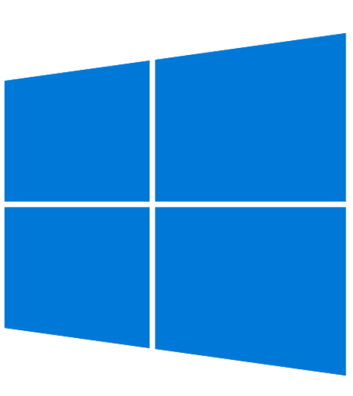

Exporters
Exporters Extensions
Extensions Interface
Interface Chowdren
Chowdren ClickStore
ClickStore Bug Tracker
Bug Tracker| |
This is an archive. |
| See the new ClickWiki at https://clickwiki.net. This version is just an archive for the purposes of migrating content to the new structure. |
{kind=link}
{kind=link}
File:Supported Windows.png
{kind=link}
{kind=link}
{kind=link}
{kind=link}

No higher resolution available.
Supported_Windows.png (64 × 64 pixels, file size: 769 bytes, MIME type: image/png)
Summary
Icon to indicate support for Windows-based systems.
Licensing
The image is copyrighted belonging to someone else; has been granted permission for its use or is used under usage guidelines (for example, the  Windows® logo). This also includes images under "fair use" (such as screenshots).
Windows® logo). This also includes images under "fair use" (such as screenshots).
File history
Click on a date/time to view the file as it appeared at that time.
| Date/Time | Thumbnail | Dimensions | User | Comment | |
|---|---|---|---|---|---|
| current | 11:24, 13 October 2015 | | 64 × 64 (769 bytes) | Lh37 (talk | contribs) | Scaled down for improved appearance for small icons. Based from SVG: https://commons.wikimedia.org/wiki/File:Windows_10_Logo.svg |
| 01:00, 24 September 2015 |  | 500 × 561 (13 KB) | Advaith (talk | contribs) | Clickteam updated the logo for the Windows Exporter. See the bottom: http://www.clickteam.com/clickteam-fusion-2-5 | |
| 16:11, 11 April 2015 | 64 × 64 (6 KB) | Lh37 (talk | contribs) | Icon to indicate support for Windows-based systems. |
{kind=link}
{kind=link}
- You cannot overwrite this file.
File usage
More than 100 pages link to this file. The following list shows the first 100 page links to this file only. A full list is available.
{kind=link}
- 3D Techniques
- Active
- Active Backdrop
- Analog Joystick
- Array
- Binary Data
- CD Audio Object
- Check-up
- Chowdren
- Chowdren/Platforms
- ClickConverse
- Click Blocker
- Click Converse
- Clickteam Fusion 2.5
- Counter
- Create Object
- DataGrid Object
- Data Elements
- Eternal Daughter
- Exporters
- Extensions
- FAQ/Screen Resolution
- Firefly
- Firefly 2D Text
- Firefly Node - Animated Mesh
- INI
- INI++ Object
- Install Creator 2
- MCI
- Made with Fusion
- Mixer
- Multimedia Fusion 1.5
- Multimedia Fusion 2
- Multiple Touch
- OS Compatibility
- Patch Maker
- Player Object
- Process Viewer
- Quick Backdrop
- Search
- Sound Object
- Storyboard Controls
- String
- The Games Factory 2
- The Mouse & Keyboard object
- Timer Object
- Vitalize Plugin
- Talk:Extensions
- File:Amazon In-App.png
- File:ChowdrenIcon.png
- File:Chowdren Mac.png
- File:Chowdren Windows.png
- File:DiscordIcon.png
- File:Facebook.png
- File:Forms.png
- File:FusionScene.png
- File:Gadu-Gadu Object.png
- File:Icon DirectShow.png
- File:Icon Java.png
- File:Icon OpenGLBulletDebugDraw.png
- File:Icon OpenGLBulletPhysics.png
- File:Icon Registry++ Extension.png
- File:Icon Steam.png
- File:Icon Steamworks.png
- File:Icon TGF2Newgrounds.png
- File:Icon Tray Icon Object.png
- File:Icon iOS Game Center Connect object.png
- File:Icon iOS Store object.png
- File:Main OpenGL.png
- File:NivramMMF2Examples.png
- File:Runtime Flash.png
- File:Runtime HTML5.png
- File:Runtime UWP.png
- File:Runtime Windows.png (file redirect)
- File:Runtime XNA.png
- File:Runtime iOS.png
- File:Supported 3DS.png
- File:Supported Camino.png
- File:Supported Chrome.png
- File:Supported Edge.png
- File:Supported Firefox.png
- File:Supported Flock.png
- File:Supported IE.png
- File:Supported Mac.png
- File:Supported Netscape.png
- File:Supported OSX.png
- File:Supported Opera.png
- File:Supported PS4.png
- File:Supported PSVita.png
- File:Supported Safari.png
- File:Supported SeaMonkey.png
- File:Supported WiiU.png
- File:Supported WinPhone.png
- File:Supported Windows.png
- File:Supported Windows9x.png
- File:Supported Xbox360.png
- File:TheDailyClick.png
- File:Twitter.png
- File:XLua Object.png
- Template:EXE
{kind=link}
{kind=link}
{kind=link}
{kind=link}
{kind=link}
{kind=link}
{kind=link}
{kind=link}
{kind=link}
{kind=link}
{kind=link}
{kind=link}
{kind=link}
{kind=link}
{kind=link}
{kind=link}
{kind=link}
{kind=link}
{kind=link}
{kind=link}
{kind=link}
{kind=link}
{kind=link}
{kind=link}
{kind=link}
{kind=link}
{kind=link}
{kind=link}
{kind=link}
{kind=link}
{kind=link}
{kind=link}
{kind=link}
{kind=link}
{kind=link}
{kind=link}
{kind=link}
{kind=link}
{kind=link}
{kind=link}
{kind=link}
{kind=link}
{kind=link}
{kind=link}
{kind=link}
{kind=link}
{kind=link}
{kind=link}
{kind=link}
{kind=link}
{kind=link}
{kind=link}